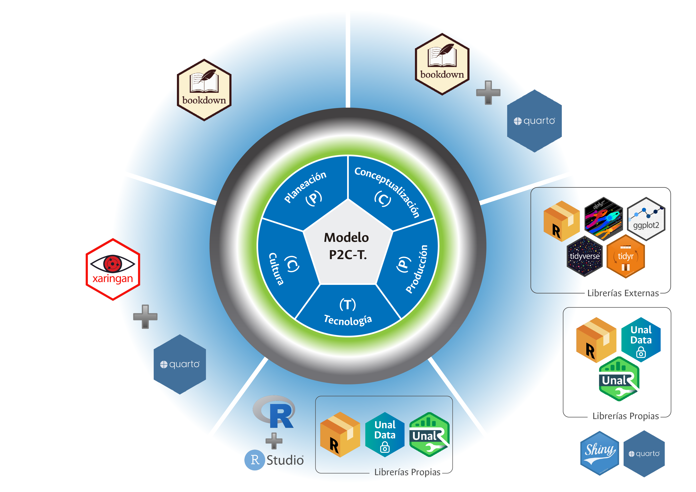

Alberto Rodríguez Rodríguez albrodriguezr@unal.edu.co
Dirección Nacional de Planeación y Estadística Universidad Nacional de Colombia
QR de la presentación
¿Qué es el Sistema de Estadísticas Oficiales de la UNAL?
El sistema de Estadísticas Oficiales de la UNAL está conformado por los instrumentos y las herramientas orientadas a la gestión y disposición de las cifras estadísticas oficiales, así como al uso y extracción del valor contenido en los datos institucionales.
Aspirantes, admitidos, matriculados, graduados, docentes, personal administrativo, así como enlaces a información oficial de investigación, extensión e innovación e información financiera.
Mecanismos de difusión
Dashboards.
Boletines web estadísticos.
Herramientas Tecnológicas (T)
El software R, protagonista en la gestión estadística en la UNAL

El Paquete de R UnalR
El paquete UnalR proporciona métodos y herramientas para la visualización de estadísticas.
Aporte Central
Conjunto de funciones orientadas a la visualización estática e interactiva haciendo uso de funciones únicas derivadas de los paquetes highcharter, plotly, leaflet, DT, gt y ggplot2, principalmente.